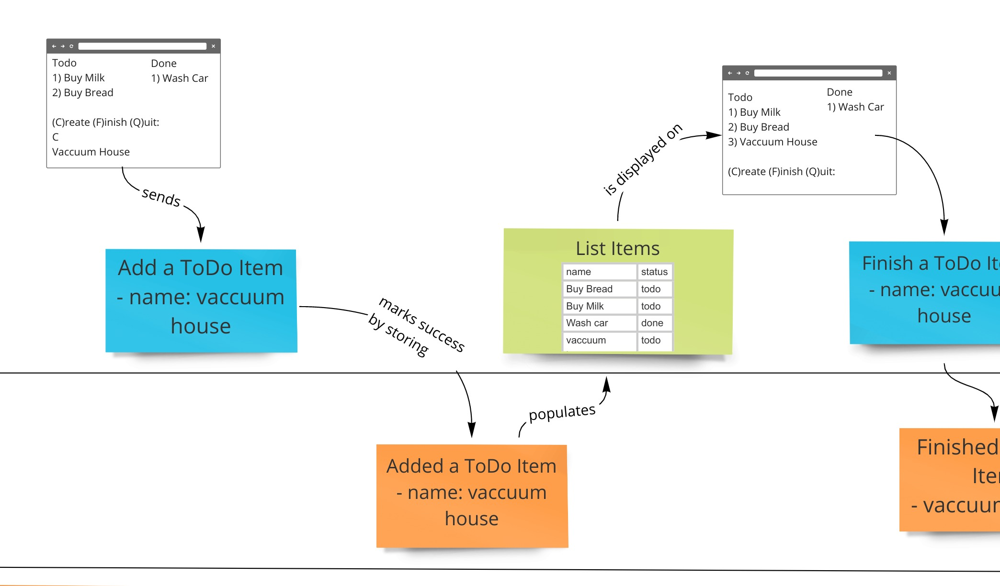
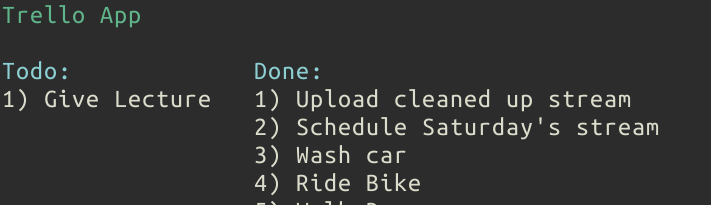
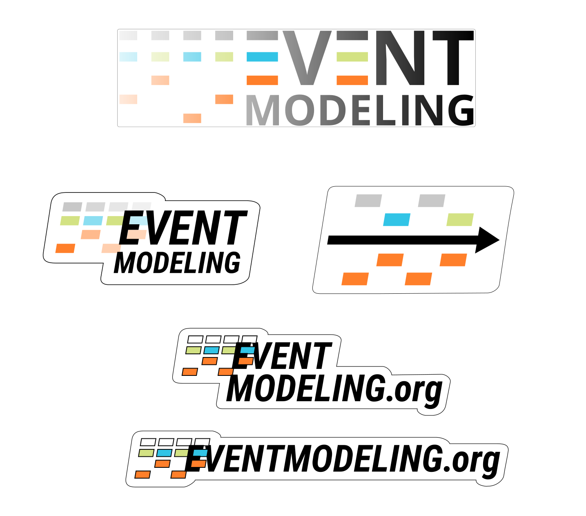

The community needed a non-technical discussion on Information System design. The Slack channel was created to create an environment where this type of discussion could happen and allow a new avenue for the practice to get adopted. You can join the community throught this link
This is a more recent video of Event Modeling being explained to the DDD Greece meetup group.
This is the first public recording of a talk on Event Modeling. It was recorded at the Event-Driven Meetup in Seattle, WA. James Nugent was presenting on the Raft consensus algorithm that same night.
These are the upcoming workshops around the globe that are about or include Event Modeling:

In the demos of event modeling, Miro Realtime Board is used. If you would like to get started from a small example, you can download the example event model above from here.

This script only requires fish shell and a couple of command line utilities to show the above example work. You can find it in a gist here.
You’ll be able to order these straight here for a small fee to cover printing and shipping - it’s being set up right now. But the SVGs are provided as well in case you want to work on the design yourself or send it to your own printer to save on shipping and other costs.
 download
{kind=link}